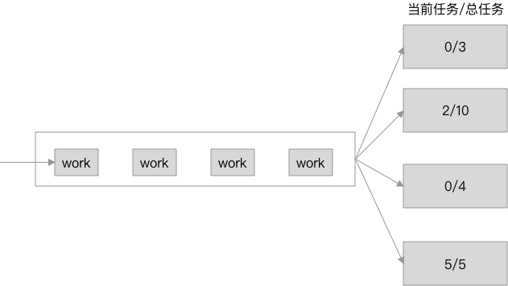

取自 Go 语言面试：Load Balancer
图示如下

给出的初始代码如下，请在半个小时内完成
1
2
3
4
5
6
7
8
9
10
11
12
13
14
15
16
17
18
19
20
21
22
| package main
import (
"log"
"math/rand"
"time"
)
func main() {
lb := LB(4)
for i := 0; i < 10; i++ {
j := i
lb.submit(func() {
log.Printf("doing job %d\n", j)
time.Sleep((time.Duration(rand.Intn(10)) * time.Second))
})
}
lb.wait()
}
|
以下仅为笔者自己的思路和实现，完整代码
首先先确定需要用到的对象和接口，对象可以有：Loadbalancer 对象和 Worker 对象。由于该题中设计到负载均衡的算法，也就是从一组 Worker 中找出一个最合适的 Worker ，这个过程可以有不同的算法，所以决定独立出一个 Selector 接口，相关的数据结构如下
1
2
3
4
5
6
7
8
9
10
11
12
13
14
15
16
17
18
19
20
21
| type Task func()
type Selector interface {
Select([]*WorkerInfo) (*WorkerInfo, error)
}
type WorkerInfo struct {
ID int
CurrentTasksCount int
MaxTasksCount int
CountLock sync.RWMutex
}
type LoadBalancer struct {
workerInfos []* WorkerInfo
workerChannel map[int](chan Task)
wg sync.WaitGroup
selector Selector
cancel context.CancelFunc
}
|
首先对于 LoadBalancer 对象，需要实现主 main 中的 submit 和 wait 方法
1
2
3
4
5
6
7
8
9
10
11
12
13
14
15
16
17
| func (lb *LoadBalancer) submit(task Task) {
lb.wg.Add(1)
worker, err := lb.selector.Select(lb.workerInfos)
if err != nil {
panic(err)
}
worker.CountLock.Lock()
worker.CurrentTasksCount += 1
worker.CountLock.Unlock()
lb.workerChannel[worker.ID] <- task
}
func (lb *LoadBalancer) wait() {
lb.wg.Wait()
lb.cancel()
}
|
为了简单起见，这里就写一个 Selector 最简单的实现，也就是选择 CurrentTasksCount/MaxTasksCount 最小的 Worker
1
2
3
4
5
6
7
8
9
10
11
12
13
14
15
16
17
18
| type NormalSelector struct{}
func (ns *NormalSelector) Select(workerInfos []*WorkerInfo) (*WorkerInfo, error) {
minWorkLoad := 1.0
var minW *WorkerInfo
for _, wi := range workerInfos {
wi.CountLock.RLock()
if wl := float64(wi.CurrentTasksCount) / float64(wi.MaxTasksCount); wl < minWorkLoad {
minWorkLoad = wl
minW = wi
}
wi.CountLock.RUnlock()
}
if minW == nil {
return nil, errors.New("worker not found!")
}
return minW, nil
}
|
以及初始化 LB 方法
1
2
3
4
5
6
7
8
9
10
11
12
13
14
15
16
17
18
19
20
21
22
23
24
25
26
27
28
29
30
31
32
33
34
35
36
37
38
39
40
41
| func LB(lbCount int) *LoadBalancer {
ctx, cancel := context.WithCancel(context.Background())
lb := &LoadBalancer{
selector: &NormalSelector{},
workerChannel: make(map[int](chan Task)),
cancel: cancel,
}
for i := 0; i < lbCount; i++ {
w := &WorkerInfo{ID: i, MaxTasksCount: i+1}
lb.workerInfos = append(lb.workerInfos, w)
ch := make(chan Task, 1)
lb.workerChannel[i] = ch
go func(w *WorkerInfo, task chan Task, wg *sync.WaitGroup, ctx context.Context) {
for {
select {
case fn := <-task:
id := w.ID
fmt.Printf("[BEGIN %d] worker %d got task\n", id, id)
fn()
fmt.Printf("[DONE %d] worker %d finish task\n", id, id)
w.CountLock.Lock()
w.CurrentTasksCount -= 1
w.CountLock.Unlock()
wg.Done()
case <-ctx.Done():
return
}
}
}(w, ch, &lb.wg, ctx)
}
return lb
}
|
在上述两个代码片段中，在操作 Worker 中的相关数值时用到了锁，因为这是在并发的环境下，需要保证数据的一致性。可以将相关的代码封装成 WorkerInfo 的相关方法，这里就不再多写了